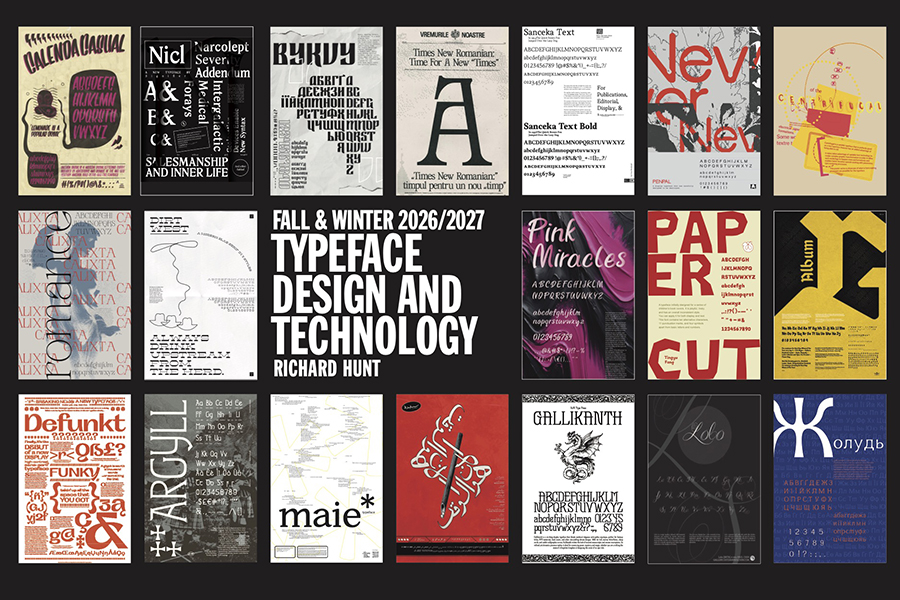
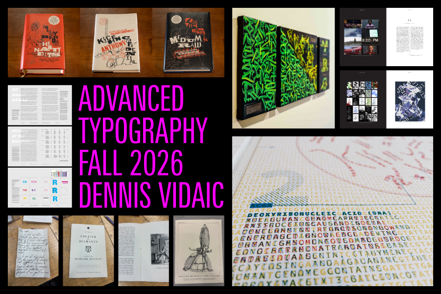
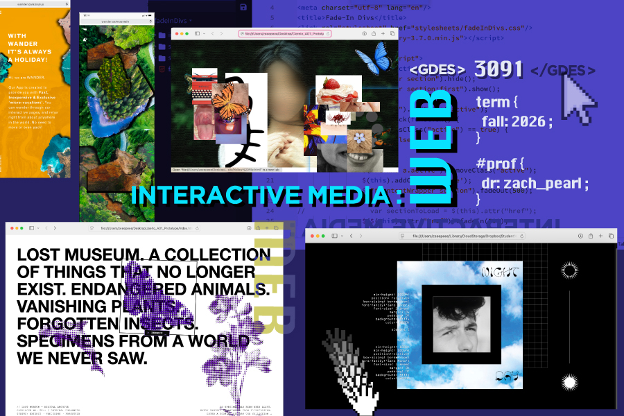
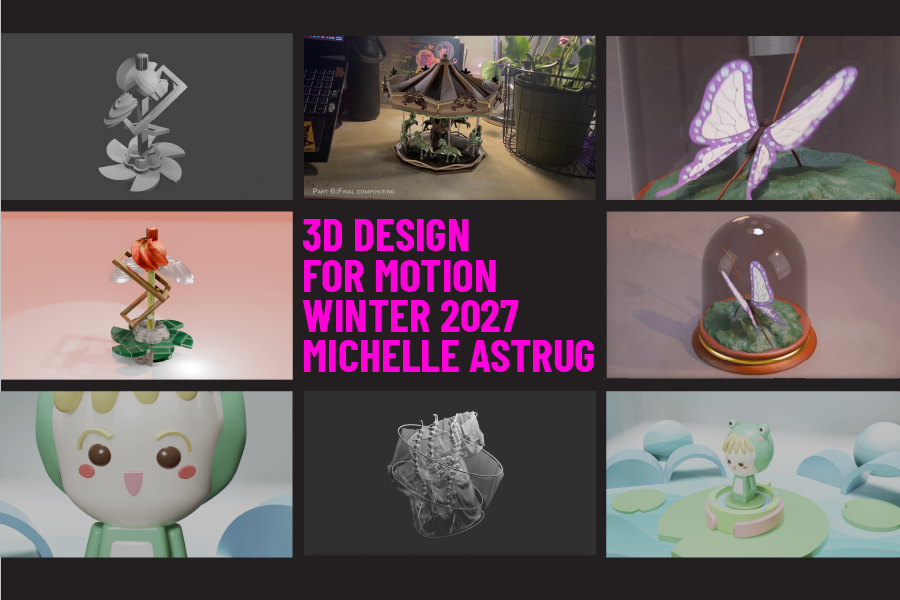
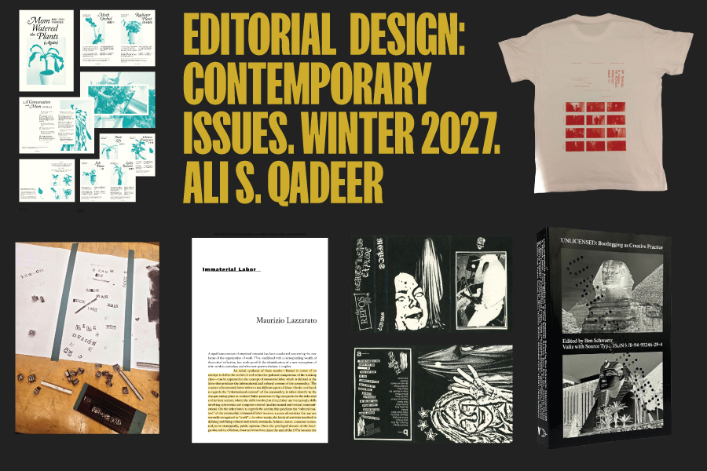
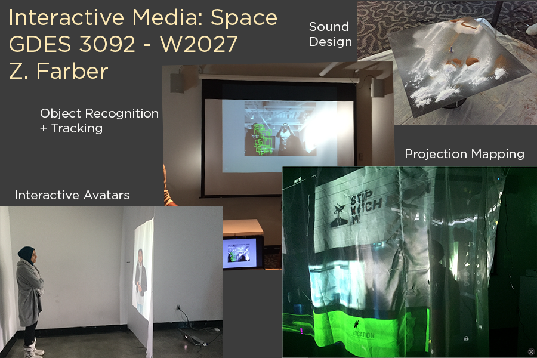
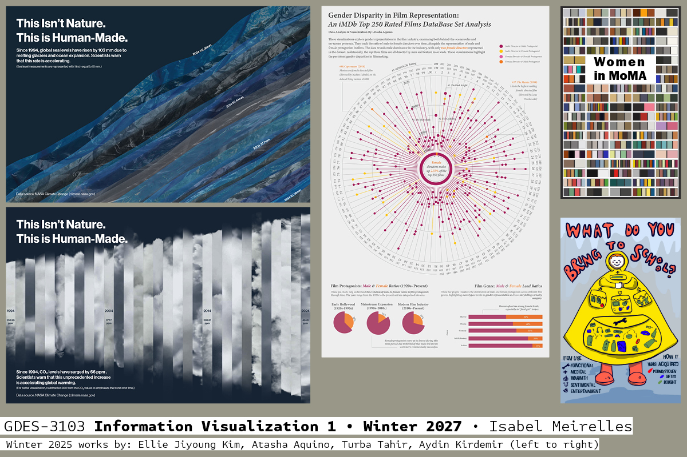
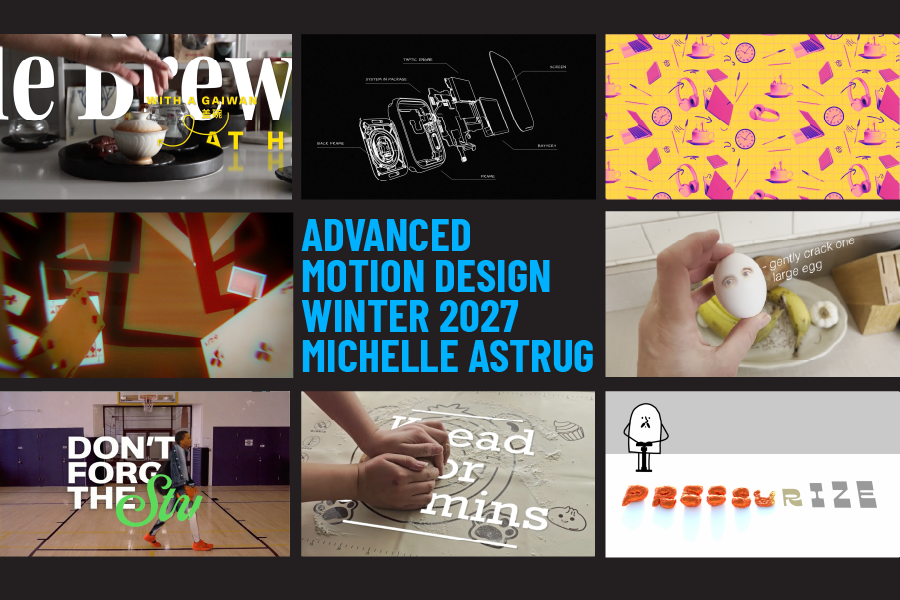

Hello all,
You’re receiving this because you’re eligible to register for electives in the coming year. I’m writing to share some of the courses being offered by our department.
Faculty have provided short, informal descriptions of each class’s themes and assignments below.
Take a peek!
--
Ali Shamas Qadeer | BA MFA
Associate Professor (he/him)
Chair, Graphic Design
OCAD University
100 McCaul Street, Toronto, ON
Canada M5T 1W1

Learning how to design and create characters and make them into working fonts is a valuable skill for the professional graphic designer. This course leads to a better understanding of how type forms work individually and together, how to work effectively with vector forms, and a better understanding of typographic structure. By the end of this course you will have developed a font that can be used for your own work, and display it in a type specimen and poster.

This course further explores the structural and communicative aspects of type and refining its use to enhance meaning. Students use skills and knowledge from previous courses to work on practical applications of advanced typographic systems. Course content will be presented with lectures, assignments, individual & group discussions, and critiques, with emphasis placed on encouraging students to refine their typographic voice.

This course explores the technical and philosophical dimensions of designing interactive online experiences. In addition to learning the fundamentals of HTML, CSS, and JavaScript, students will engage issues of user experience, customization, and digital accessibility. Assignments range widely from an open-ended and immersive UX based on labyrinths to a more conventional app development project for a local record store.

3D Design for Motion is an introductory course that builds foundational skills in 3D design within a motion design context using Blender. Students learn how to create and work with basic 3D forms and explore how objects and cameras can be animated to build dynamic motion sequences. The course introduces key techniques such as modelling, materials and colour, lighting, object and camera animation, rendering, and basic camera tracking and compositing. Weekly workshops and in-class exercises support the development of a term-long project, which students take from concept through to final production.

This course will be devoted to three overarching topics that I find compelling (and time sensitive) in the field of graphic design today: archiving, bootlegging, and distribution. The course will be delivered through a series of lectures, reading responses, assignments, critiques, and possible site visits around the city of Toronto. Students will respond to each topic with an open-ended assignment.

GDES 3092 will give students a chance to explore how new technologies can expand your creative practice through interactive methods. We’ll explore both artistic and commercial elements of user experience design, experimental techniques to working with all kinds of digital media, and practical approaches that lead to unique concept development. You will have the chance to complete expressive studio projects that will start at an introductory level and progress towards engaging, immersive interactive environments.

The course explores the implications and applications of data-driven processes through lectures, readings, and projects. Students will create a series of data visualizations in the media (physical, digital) and format (posters, booklets, objects, apps, webpages) of their choice. The focus is on social, cultural, and environmental issues.

This course builds on the skills developed in Motion Design, introducing more complex animation projects and advanced techniques in Adobe After Effects. Students explore tools such as compositing, motion tracking, and green screen to integrate live-action video with animated elements, including text, illustration, and 3D graphics. The course is delivered through a combination of hands-on workshops and lectures, with assignments that may include combining 2D and 3D elements and creating explainer videos that blend animation with live-action footage.
Note: Some of these courses have prerequisites.
These aren't all of the electives we offer. There are plenty more to keep your eye out for!
For those of you entering your 4th year, stay tuned for an email outlining potential Workshop classes soon.